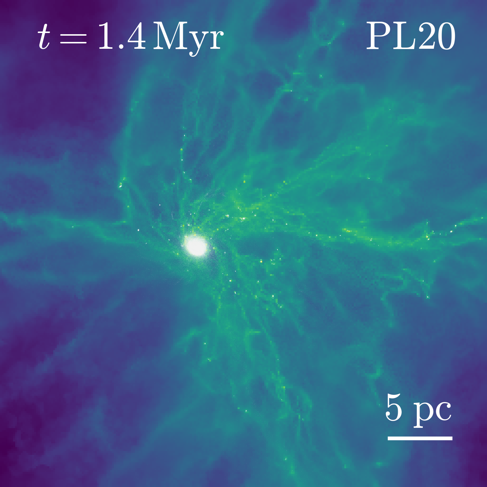

Modelling formation and evolution of globular clusters (GCs)
Supervised by Oleg Gnedin, I update the GC formation model developed by Choksi & Gnedin (2019) by adding spatial information to modeled GCs.
Head figures: Edge on locations of modeled GCs in TNG subhalos.
Giant molecular clouds (GMCs) with different initial density profiles
Together with Hui Li and Mark Vogelsberger, I use a moving mesh, hydrodynamic cosmological code AREPO (Springel 2010) to investigate the effects of initial density profiles on the evolution of star clusters in GMCs. We suggest that the uniform profile follows a "hierarchical" cluster formation mode, while the steep power-law profiles show an "accretion" dominated mode. These two cluster formation modes lead to different proprieties of the most massive clusters in GMCs. Our first paper is accepted for pulication by MNRAS (Chen, Li and Vogelsberger 2021).
 |
 |
"Hierarchical" (left) and "accretion" (right) modes for cluster formation.